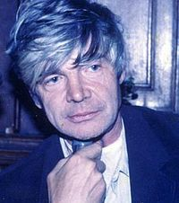

Воспользовавшись AntConc нам удалось произвести поиск и посчёт некоторых текстовых элементов, а так же проанализировать контекст и частотность употребления слова "водка" и производных от него.
С помощью НКРЯ удобнее всего рассматривать слово в контесте. Особенно в этом помогает возможность поиска в подкорпусах. Мы естественно выбрали подкорпус "Москва и Петушки" (1970). И нам было предоставленно 18 вхождений.

Задав слово "водка", мы получили следующий график его употребления

Как и предполагалось в начале нашего исследования, водка оказывается одним из ключевых семантических центров произведения. Важной оказывается двоякость ее репрезентации героем: с одной стороны, водка отвергается как антологически необходимая составляющая бытия, причем выражается это через повторяющиеся формулы. Таким образом утверждается ее принадлежность к профанному плану. С другой стороны, во втором типе ее упоминаний сам процесс употребления водки, фактически, сакрализируется, потому что обрастает определенным — совершенно принципиальным — ритуалом. Так, этот, казалось бы, профанный «объект» становится на самом деле способом перехода от профанного восприятия к сакральному, становится способом получения божественного откровения, способом видения «низменного» окружающего мира через «возвышенную» оптику. Таким образом, можно сказать, что двоякость ее репрезентации иллюстрирует ключевой конфликт произведения и внутренний конфликт самого героя, а именно то, что единственным способом получения божественного откровения оказывается погружение в полностью противоположный ему, низменный мир. Поэтому водка одновременно «отрицается» (т.к. Трудно поверить, что это в действительности единственная возможность почувствовать «величие замысла») и «принимается» — простите за каламбур — потому что и правда оказывается единственным способом познать Бога./p> 